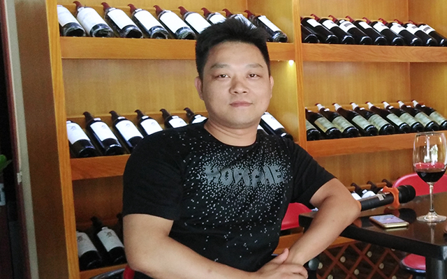
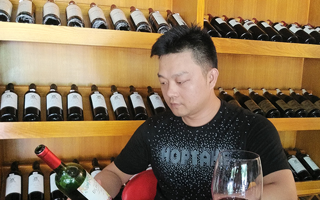

赖国雄，美隆实业红酒总代理，酒业销售达人，已经从事酒业15年，做过各大品牌的啤酒、白酒，是酒行业的资深行家；他还是一个销售达人，一个月可创下十万甚至过百万的销售量，可是他却放下过去种种辉煌成绩，毅然投身红酒微营销行业，成为涉足红酒微商的先行者。
Q：您是酒行业的资深行家，在传统的销售当中也取得相当大的成就，为什么愿意放下原来的事业，全身心投入到红酒微营销的行业当中？
A：在传统的销售模式当中，我虽然取得了相当的成绩，但是我并不满足于现状，我希望取得更加卓越的成绩。我也并不是盲目地就放下以前的工作，所有的决定都是经过深思熟虑的。现在白酒、啤酒行业已经处于一个饱和状态，而红酒在中国市场则是一个上升的状态，具有很大的潜力，与其固守在原有发展得繁荣的事物上，不如去开发发展潜力大的事物。
Q：那您之前听说过移动互联网+的营销模式吗？你对这个营销模式的印象是怎么样的？
A：在之前有听说过移动互联网+的营销模式，而且也看到过成功的案例。在我的家乡有一户家庭条件不是那么好的农民，他们的儿子是学习计算机专业的，毕业后做起了电商，在很短的时间内就取得了很好的成绩，带领整个家族发财致富。一个没有任何工作经验的学生也能做出如此好的成绩，可想而知，互联网是一个多么强大的营销平台。
Q:您在几年前就看到了微商的前景？为什么到现在才涉足微营销行业？
A:刚刚我也说过，我投身微营销的行业是经过深思熟虑的。毕竟我以前的事业是非常不错的，不可能贸然放下，我需要观察市场，伺机而动。机缘之下，我了解到广东美隆实业投资有限公司的营销模式，既保留了传统销售的优势，也突破了传统销售的局限，发展潜力非常大，所以在前不久才涉足微营销行业。
Q:在微营销行业中，化妆品市场已经做得非常成功，那你为什么不选则做面膜为营销而选择做红酒为营销？
A:我从事酒行业已经有十五年了，对酒非常熟悉，虽然以前都销售以白酒、啤酒为主，但也有接触红酒，相对于面膜，我对红酒更为熟悉。其次，在微营销行业中，化妆品的覆盖率已经非常广了，要做出成绩不是那么容易，而红酒微商虽然也有人在做，但是很多都是小范围经营，没有做大，所以红酒微营销市场还有很大的开发潜力。
Q:您刚才说到有些红酒公司也开始做微营销，在众多的公司中为什么要选择美隆实业呢？
A:因为之前接触到的公司还不足以让我心动，实事求是地说，根据他们的实力，发展空间可能会比较局限。而美隆公司是中国红酒第一品牌，不仅要发展国内市场，还要发展国外市场，而且他们提供的营销方式非常创新，以我多年的工作经验来看，这是一个非常难得的机遇。
上一篇；【吴永红】不断求新，事业永不封顶
下一篇：【CoCo】破茧而出，美丽蜕变